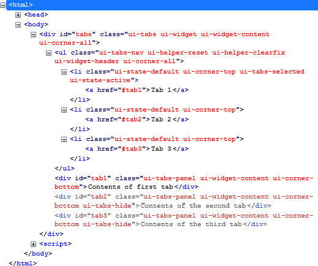
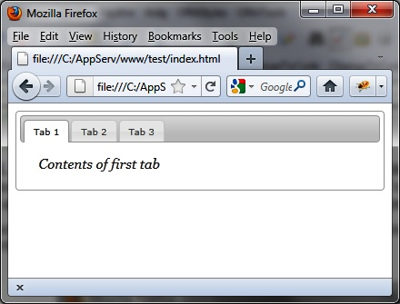

{% include JB/setup %}
{% raw %}
<div>
<div class="book" title="Formatting Content"><div class="book"><div class="book"><div class="book"><h1 class="title2"><a id="formatting_content" class="calibre1"></a>Formatting Content</h1></div></div></div><p class="calibre7">Using the <code class="literal">tabs ()</code> method
    drastically changes the appearance of HTML elements inside the page.
    Indeed, this method traverses (internally in jQuery UI) HTML code and adds
    new CSS classes to the elements concerned (here, the tabs) to give them
    the appropriate style.</p><p class="calibre7"><a class="ulink" href="ch02s02.html#html_code_generated_with_the_tabs_open_p" title="Figure 2-3. HTML code generated with the tabs () method">Figure 2-3</a> shows
    the HTML generated by jQuery UI once the <code class="literal">tabs
    ()</code> instruction has changed the HTML DOM (Document Object Model)
    tree (the code was recovered using the Firebug extension in
    Firefox).</p><p class="calibre7">It is possible to use CSS classes of elements to customize the
    display. For example, if we modify the ui-state-default CSS class
    associated with <code class="literal">&lt;li&gt;</code> elements, we
    should get a new aspect for tabs. Similarly, if we modify the
    ui-tabs-panel CSS class associated with <code class="literal">&lt;div&gt;</code> elements, the contents of the tabs
    will change in appearance.</p><p class="calibre7">Modify these elements in the HTML by adding a <code class="literal">&lt;style&gt;</code> tag (shown in bold):</p><a id="I_programlisting2_d1e909" class="firstname"></a><pre class="programlisting">&lt;script src = jquery.js&gt;&lt;/script&gt;
&lt;script src = jqueryui/js/jquery-ui-1.8.16.custom.min.js&gt;&lt;/script&gt;

&lt;link rel=stylesheet type=text/css
      href=jqueryui/css/smoothness/jquery-ui-1.8.16.custom.css /&gt;

<span class="firstname"><strong class="userinput">&lt;style type=text/css&gt;</strong></span>
  <span class="firstname"><strong class="userinput">li.ui-state-default {</strong></span>
    <span class="firstname"><strong class="userinput">font-size : 10px;</strong></span>
  <span class="firstname"><strong class="userinput">}</strong></span>
  <span class="firstname"><strong class="userinput">div.ui-tabs-panel {</strong></span>
    <span class="firstname"><strong class="userinput">font-size : 15px;</strong></span>
    <span class="firstname"><strong class="userinput">font-family : georgia;</strong></span>
    <span class="firstname"><strong class="userinput">font-style : italic;</strong></span>
  <span class="firstname"><strong class="userinput">}</strong></span>
<span class="firstname"><strong class="userinput">&lt;/style&gt;</strong></span>

&lt;div id=tabs&gt;
  &lt;ul&gt;
    &lt;li&gt;&lt;a href=#tab1&gt;Tab 1&lt;/a&gt;&lt;/li&gt;
    &lt;li&gt;&lt;a href=#tab2&gt;Tab 2&lt;/a&gt;&lt;/li&gt;
    &lt;li&gt;&lt;a href=#tab3&gt;Tab 3&lt;/a&gt;&lt;/li&gt;
  &lt;/ul&gt;
  &lt;div id=tab1&gt;Contents of first tab&lt;/div&gt;
  &lt;div id=tab2&gt;Contents of the second tab&lt;/div&gt;
  &lt;div id=tab3&gt;Contents of the third tab&lt;/div&gt;
&lt;/div&gt;

&lt;script&gt;

$("#tabs").tabs ();

&lt;/script&gt;</pre><p class="calibre7">The addition of our own styles must be done
    <span class="firstname"><em class="calibre4">after</em></span> those of jQuery UI, otherwise our changes will
    be ignored.</p><div class="book"><div class="figure"><a id="html_code_generated_with_the_tabs_open_p" class="firstname"></a><div class="book"><div class="book"><a id="I_mediaobject2_d1e950" class="firstname"></a></div></div><p class="title4">Figure 2-3. HTML code generated with the tabs () method</p></div></div><p class="calibre7">As shown in <a class="ulink" href="ch02s02.html#the_tabs_have_been_customized" title="Figure 2-4. The tabs have been customized">Figure 2-4</a>, the
    appearance of tabs and their content has been changed according to the new
    style.</p><div class="book"><div class="figure"><a id="the_tabs_have_been_customized" class="firstname"></a><div class="book"><div class="book"><a id="I_mediaobject2_d1e962" class="firstname"></a></div></div><p class="title4">Figure 2-4. The tabs have been customized</p></div></div></div></div>

{% endraw %}

